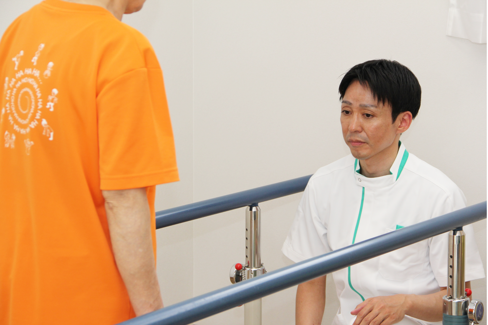

当院の紹介
当院は、お客様とそのご家族様との一生のお付き合いを目指して立ち上げました。
脳卒中やその他神経系の病気をきっかけに手足に後遺症がある方や加齢に伴って、
活動性が低下した方、立つ歩く動作などが不安定になってきてしまった方、
身体の衰えを予防したい方、痛みや職業特有の身体の悩みがある方などを対象に、
完全自費対応でのリハビリを提供する院です。
一生のお付き合いができるリハビリ施設を目指した理由
ご病気をきっかけに一時的に病院や施設でリハビリを行い、
在宅復帰を果たす方は多数いらっしゃると思います。
しかし、リハビリはそこでおわりではありません。
在宅に戻れてうれしい反面、今後の生活において不安を抱く方も多いのではと考えています。
そのように今後の生活に不安を頂いている方に対して一生涯の支援をしたいという思いから、当院を立ち上げました。
当院の特徴

マンツーマン対応
国家資格を持ったセラピストがマンツーマンで対応します。個別性に応じたリハビリを提供できます。

安心と安全な環境
バイタル管理を徹底し、経験豊富なスタッフが対応。急な体調不良でも安心のキャンセル無料対応。

自主練習と習慣化
自宅でのリハビリ習慣化を支援。ご家族と一緒に、継続的な改善を目指します。
ご利用までの流れ
当院では無料にてリハビリ体験を行っています。
当院のリハビリの方向性とお客様のご意向がマッチしているかお客様に見極めていただくことが目的です。
その後、ご利用に同意となりましたら予約を取り、お客様の当院でのリハビリがスタートとなります。
希望の日時の候補の記載を3つお願いします。
（※クリックすると、詳細が表示されます。）
１. 問診
まずは現在のお身体の不調や痛みなどで悩まれていることを聞かせて頂きます。
また、生活上や仕事上で悩まれている場合は、実際の動作を確認させて頂きます。
（例：歩行動作、重たいものを持つ動作、家族の介助をする動作など）
２. 姿勢・動きの評価
姿勢や動きを評価し、痛みの原因などを分析させて頂きます。
お一人お一人個別性があり、身体の癖をみることで改善する方向を探していきます。
また、その都度身体の使い方のアドバイスもさせて頂きます。
３. 当院のリハビリの方向性について説明
一通り評価を行った後、当院のリハビリの方向性について説明させて頂きます。
お客様に納得感を持ってもらった方が、より良い方向に導いていけると考えているため、十分に説明させて頂きます。
（※クリックすると、詳細が表示されます。）
１. 施術・運動療法の実施
評価結果をもとに、お一人お一人に合ったプログラムを提案させて頂きます。
お客様と一緒に効果を話し合いながら進められるため、楽しみながら行っていきます(^^♪
２. 効果の確認、自主練習の指導
リハビリ実施後の効果の確認をします。
ご家庭でも行えるものがあれば、自主練習として指導させて頂きます。
当院のリハビリと自主的なリハビリが合わさることで、さらに良い効果が生まれるため、自主練習も大切なのです。
営業時間・ご利用料金
営業時間
午前：8:00～12:00、午後13:00～21:30
定休日：毎週水曜日
ご利用料金
初回体験：無料
1回あたり：3,500円（税込み）
施術時間：約1時間
Q＆A

お客様に納得して頂いてからのご利用スタートになります。
下記よりお問い合わせください。
・フォーム
・お電話
活動性が低下した方、立つ歩く動作などが不安定になってきてしまった方、
身体の衰えを予防したい方、痛みや職業特有の身体の悩みがある方を対象にしています。
住所・アクセス
住所
〒326-0824 群馬県足利市八幡町２丁目２５ー１
半日型デイサービスはっちネクスト様隣接テナント
院長プロフィール

坂庭 徹
群馬県太田市出身。
理学療法士として、過去に総合病院、介護福祉施設、訪問リハビリに従事し、リハビリ職としてキャリアを積んできました。
特に在宅での生活復帰を支援することが多く、そうした経験をする中で、大事なのは「退院後の生活をいかに充実させるかだ」と強く感じるようになりました。
ご病気によって後遺症がある方でも、リハビリを通して可能性を引き出し、前向きに希望をもって生活してもらいたいという思いから、当院を立ち上げました。
当院の理念
１ 当院の施術、リハビリ（運動療法）を通して、お客様の幸せな人生に貢献します。
また、お客様とそのご家族様との一生涯のお付き合いを目指したリハビリ整体院を目指します。
２ いつも笑い声にあふれているリハビリ整体院で在り続けます。
３ お客様に対して真心を込めて接し、丁寧な説明、丁寧な運動指導、丁寧な施術を心掛けていきます。
当院が目指す方向性について
当院のリハビリの方向性を一言で表すと「骨格を上手に扱えるようになる」ことを目指しています。
違う表現をすると、「部分では全体を使えるようになる」ことを目指しています。
そうすることで、立つ、歩くなどの基本的な動作やスポーツ動作に変化をもたらせてくれると考えています。
そのためのポイントは３つあります。
・身体の力みをなくす
・足裏を感じる
・深く落ちついて呼吸する
です。
身体の余分な力みが消え、深く呼吸できると、身体に良い変化が期待できます。
ただ、やはり言葉では伝わりきれない部分があると考えているため、まずは無料体験にて直接当院の目指す方向性を体感を伴ってご理解をして頂ければ幸いです。